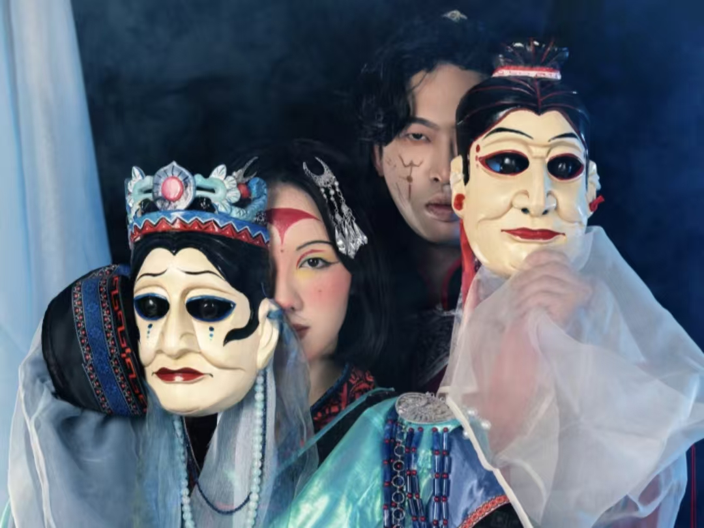
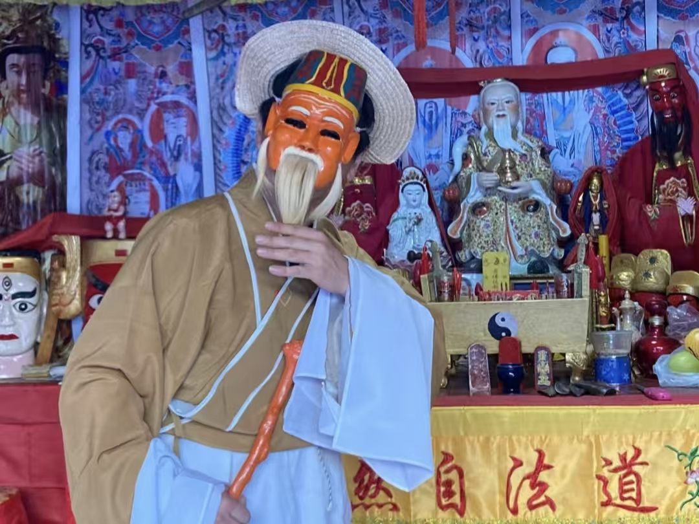

傩戏展演
傩戏是傩文化的重要表现形式，融合了舞蹈、音乐、戏剧等多种艺术元素，具有浓厚的民族特色和地方风格。
傩戏
探索千年傩文化的神秘面纱，感受传统艺术的魅力与传承
傩戏《孟姜女》
见证傩文化
傩戏
体验傩舞的刚劲有力，感受传统文化的生命力
经典傩戏剧目
探索中国各地最具代表性的傩戏表演
捉黄鬼
河北武安傩戏的代表剧目，已有千年历史。"黄鬼"象征疾病与灾祸，表演者戴着狰狞面具，手持法器，通过夸张舞蹈表现驱邪过程。多在春节期间演出，寓意驱除邪祟、祈求平安。
表演特点：动作粗犷有力，面具造型夸张，伴有锣鼓伴奏和傩歌演唱。表演包含"请神""捉鬼""送神"三个主要环节。

孟姜女
贵州德江傩堂戏经典剧目，改编自"孟姜女哭长城"的民间传说。将爱情故事与傩祭仪式完美结合，既有戏剧情节又保留祭祀功能。表演中融入大量傩戏特有的法事动作和唱腔。
表演特点：唱腔融合了贵州山歌元素，表演包含"开坛""请神""哭城"等环节，面具相对温和，突出人物性格。
开山莽将
江西南丰傩舞代表剧目，表现驱鬼逐疫的雄壮场面。"开山"指开天辟地，"莽将"则是勇猛的将军形象。表演者戴着威严面具，手持斧钺，通过刚劲有力的舞蹈表现驱邪过程。
表演特点：动作刚劲有力，面具造型威严，节奏明快，气势磅礴。舞蹈中包含大量武打动作，展现武将风采。

土地公
湖南湘西傩戏经典剧目，表现土地神保佑一方的故事。土地公形象慈祥，面具多为白须老者造型，表演内容多为祈求风调雨顺、五谷丰登。
表演特点：动作相对缓慢庄重，面具表情慈祥，唱腔平和。表演中常伴有祈福仪式，是湘西地区重要的民俗活动。
钟馗捉鬼
陕西傩戏代表剧目，展现钟馗捉鬼的传奇故事。钟馗面具造型威严中带着正气，表演内容多为驱邪镇宅、保佑平安。
表演特点：动作刚猛有力，面具红面虬髯，表演中包含大量武打场面。音乐伴奏以唢呐和锣鼓为主，气势恢宏。
傩神
云南傩戏核心剧目，表现傩神驱邪纳吉的过程。傩神是傩戏中的主神，面具造型威严神圣，表演内容多为祈福消灾。
表演特点：动作庄重肃穆，面具造型夸张神秘，表演中包含大量祭祀仪式。音乐伴奏以铜鼓和法铃为主。

二郎神
>四川傩戏特有剧目，表现二郎神降妖除魔的故事。二郎神面具额头有第三只眼，手持三尖两刃刀，是四川地区重要的保护神形象。
表演特点：动作敏捷多变，面具造型独特，表演中包含大量特技动作。音乐伴奏融合了川剧高腔元素。

五猖会
安徽贵池傩戏特有剧目，表现五猖神捉拿恶鬼的故事。五猖神是五位凶神，面具造型狰狞可怖，专门负责捉拿危害人间的恶鬼。
表演特点：动作狂放不羁，面具造型夸张恐怖，表演风格粗犷豪放。音乐伴奏以锣鼓为主，节奏强烈。